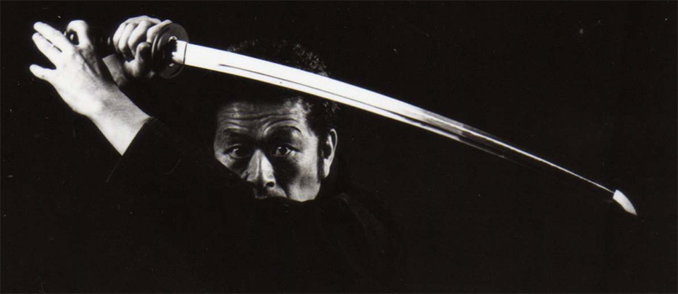

Bienvenidos
Bienvenidos a Bujinkan Aronno dojo donde encontraras todo acerca de este milenario arte japones. No dejes de navegar en la pagina y consultarnos tus iquietudes. Tambien puedes entrar a nuestras redes sociales.
Instructor
Dai Shihan Pablo D Aronno. Con 28 años de practica, numerosos viajes a japon y taikai.